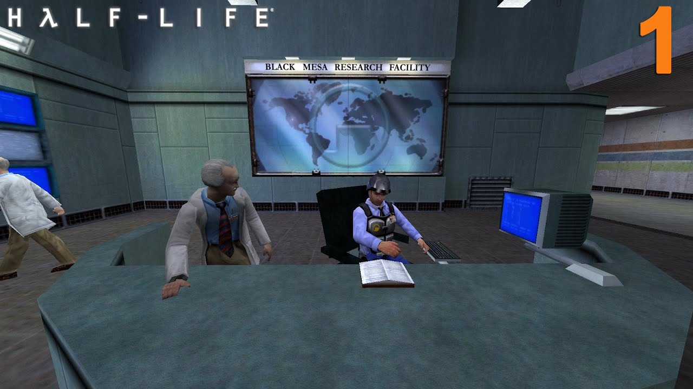
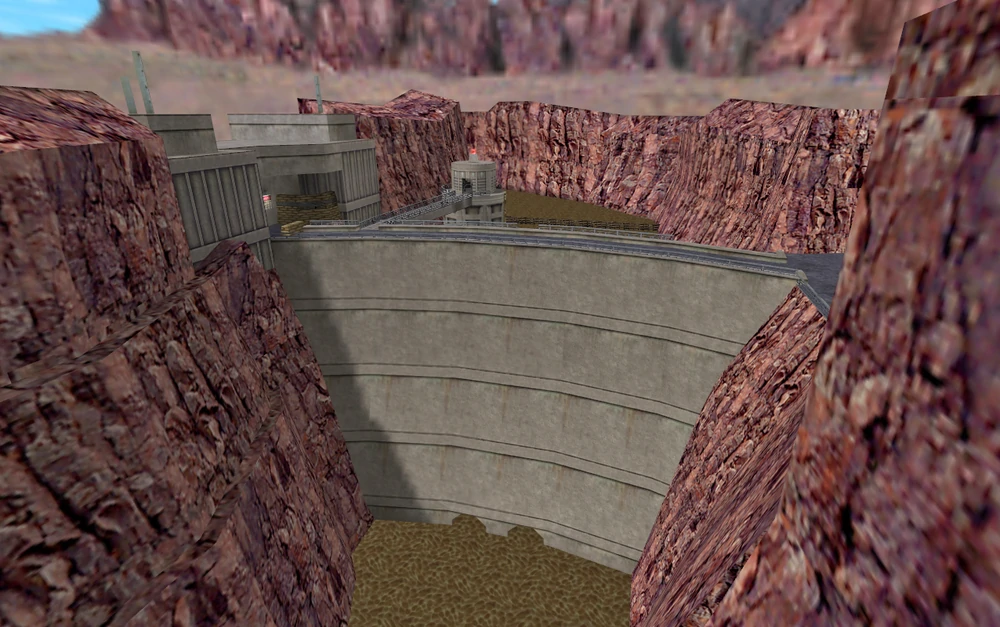
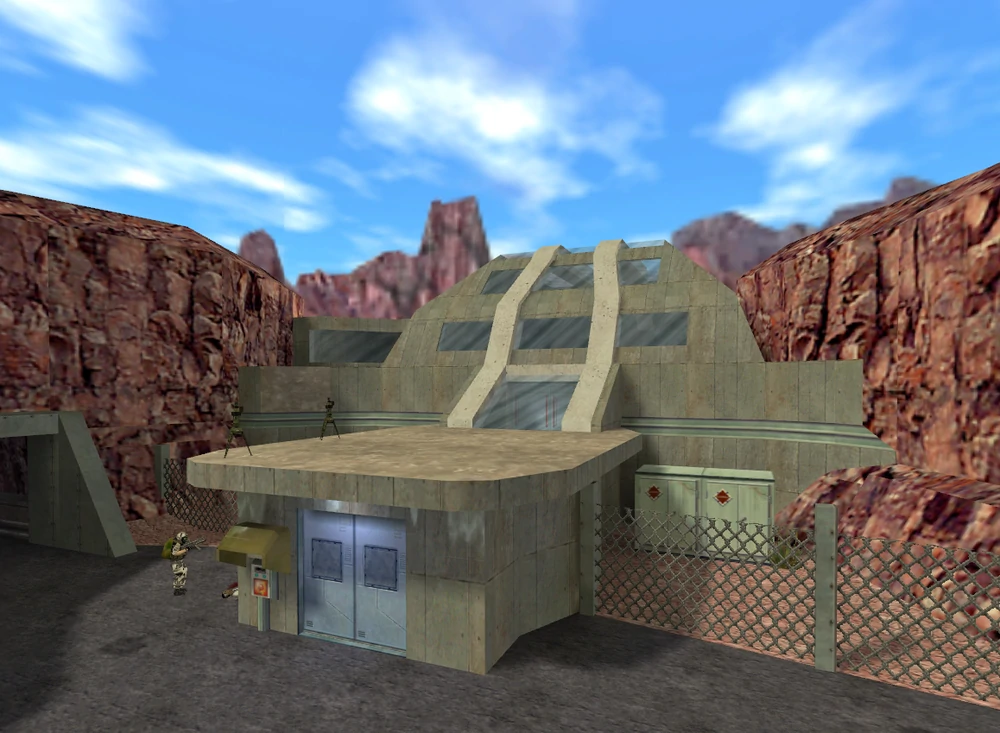
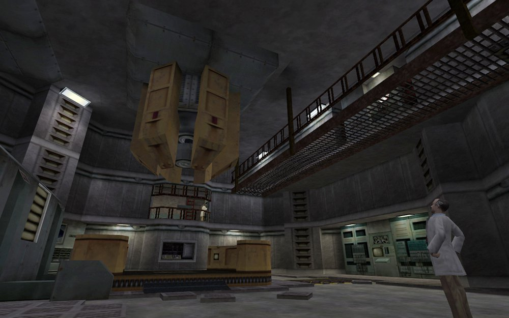

Исследовательская корпорация, основанная в 1953 году, работы ведутся в
различных областях: начиная от вполне стандартных научных исследований
до радиации, ракетостроения, теоретической физики, лазеров,
экспериментальных двигателей, гидравлики, робототехники,
гидроэнергетики, генетики, зоологии и большого спектра исследований в
области химии и физики.



